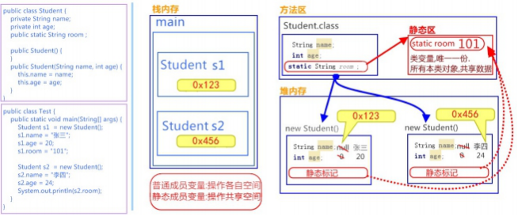

day08【String类、static关键字、Arrays类、 Math类】今日内容教学目标第一章 String类1.1 String类概述概述特点1.2 使用步骤1.3 常用方法判断功能的方法获取功能的方法分割功能的方法1.4 String类的练习拼接字符串统计字符个数第二章 static关键字2.1 概述2.2 定义和使用格式类变量静态方法调用格式2.3 静态原理图解2.4 静态代码块第三章 Arrays类3.1 概述3.2 操作数组的方法3.3 练习第四章 Math类4.1 概述4.2 基本运算的方法4.3 练习
能够使用String类的构造方法创建字符串对象
能够明确String类的构造方法创建对象,和直接赋值创建字符串对象的区别
能够使用文档查询String类的判断方法
能够使用文档查询String类的获取方法
能够使用文档查询String类的转换方法
能够理解static关键字
能够写出静态代码块的格式
能够使用Arrays类操作数组
能够使用Math类进行数学运算
java.lang.String 类代表字符串。Java程序中所有的字符串文字（例如 "abc" ）都可以被看作是实现此类的实 例。 类 String 中包括用于检查各个字符串的方法，比如用于比较字符串，搜索字符串，提取子字符串以及创建具有翻 译为大写或小写的所有字符的字符串的副本。
xxxxxxxxxxString s1 = "abc";s1 += "d";System.out.println(s1); // "abcd" // 内存中有"abc"，"abcd"两个对象，s1从指向"abc"，改变指向，指向了"abcd"。xxxxxxxxxxString s1 = "abc";String s2 = "abc";// 内存中只有一个"abc"对象被创建，同时被s1和s2共享。xxxxxxxxxxString str = "abc";相当于：
xxxxxxxxxxchar data[] = {'a', 'b', 'c'}; String str = new String(data);// String底层是靠字符数组实现的。xxxxxxxxxx// 无参构造String str = new String（）； // 通过字符数组构造char chars[] = {'a', 'b', 'c'}; String str2 = new String(chars); // 通过字节数组构造byte bytes[] = { 97, 98, 99 }; String str3 = new String(bytes);xxxxxxxxxxpublic class String_Demo01 { public static void main(String[] args) { // 创建字符串对象 String s1 = "hello"; String s2 = "hello"; String s3 = "HELLO"; // boolean equals(Object obj):比较字符串的内容是否相同 System.out.println (s1.equals(s2)); // true System.out.println (s1.equals(s3)); // false System.out.println ("‐‐‐‐‐‐‐‐‐‐‐"); //boolean equalsIgnoreCase(String str):比较字符串的内容是否相同,忽略大小写 System.out.println (s1.equalsIgnoreCase(s2)); // true System.out.println (s1.equalsIgnoreCase(s3)); // true System.out.println ("‐‐‐‐‐‐‐‐‐‐‐"); }}Object 是” 对象”的意思，也是一种引用类型。作为参数类型，表示任意对象都可以传递到方法中。
xxxxxxxxxxpublic class String_Demo02 { public static void main(String[] args) { //创建字符串对象 String s = "helloworld" ; // int length(): 获取字符串的长度，其实也就是字符个数 System.out.println (s.length()); System.out.println ("‐‐‐‐‐‐‐‐"); // String concat (String str):将将指定的字符串连接到该字符串的末尾. String s = "helloworld" ; String s2 = s.concat("**hello itheima"); System.out.println(s2);// helloworld**hello itheima // char charAt(int index):获取指定索引处的字符 System.out.println(s.charAt(0)); System.out.println(s.charAt(1)); System.out.println("‐‐‐‐‐‐‐‐"); // int indexOf(String str):获取str在字符串对象中第一次出现的索引,没有返回‐1 System.out.println(s.indexOf("l")); System.out.println(s.indexOf("owo")); System.out.println(s.indexOf("ak")); System.out.println("‐‐‐‐‐‐‐‐"); // String substring(int start):从start开始截取字符串到字符串结尾 System.out.println(s.substring(0)); System.out.println(s.substring(5)); System.out.println("‐‐‐‐‐‐‐‐"); // String substring(int start,int end):从start到end截取字符串。含start，不含end。 System.out.println(s.substring(0, s.length())); System.out.println(s.substring(3,8)); } }转换功能的方法
xpublic class String_Demo03 { public static void main(String[] args) { //创建字符串对象 String s = "abcde"; // char[] toCharArray():把字符串转换为字符数组 char[] chs = s.toCharArray(); for(int x = 0; x < chs.length; x++) { System.out.println(chs[x]); } System.out.println("‐‐‐‐‐‐‐‐‐‐‐"); // byte[] getBytes ():把字符串转换为字节数组 byte[] bytes = s.getBytes(); for(int x = 0; x < bytes.length; x++) { System.out.println(bytes[x]); } System.out.println("‐‐‐‐‐‐‐‐‐‐‐"); // 替换字母it为大写IT String str = "itcast itheima" ; String replace = str.replace ("it", "IT"); System.out.println (replace ); // ITcast ITheima System.out.println ("‐‐‐‐‐‐‐‐‐‐‐"); }}CharSequence 是一个接口，也是一种引用类型。作为参数类型，可以把String对象传递到方法中。
xxxxxxxxxxpublic class String_Demo03 { public static void main(String[] args) { //创建字符串对象 String s = "aa|bb|cc"; String[] strArray = s.split("|"); // ["aa","bb","cc"] for(int x = 0; x < strArray.length; x++) { System.out.println(strArray[x]); // aa bb cc } }}定义一个方法，把数组{1,2,3}按照指定个格式拼接成一个字符串。格式参照如下：[word1#word2#word3]。
xxxxxxxxxxpublic class StringTest1 { public static void main(String[] args) { //定义一个int类型的数组 int[] arr = {1,2, 3}; //调用方法 String s = arrayToString(arr); //输出结果 System.out.println ("s:" + s); } /* * 写方法实现把数组中的元素按照指定的格式拼接成一个字符串 * 两个明确： * 返回值类型：String * 参数列表：int[] arr */ public static String arrayToString(int[] arr) { // 创建字符串s String s = new String("["); // 遍历数组，并拼接字符串 for (int x = 0;x < arr.length; x++) { if (x == arr.length ‐ 1) { s = s.concat(arr[x] + "]"); } else { s = s.concat(arr[x] + "#"); } } return s; }}键盘录入一个字符，统计字符串中大小写字母及数字字符个数
xxxxxxxxxxpublic class StringTest2 { public static void main(String[] args) { //键盘录入一个字符串数据 Scanner sc = new Scanner (System.in); System.out.println ("请输入一个字符串数据："); String s = sc.nextLine(); //定义三个统计变量，初始化值都是0 int bigCount = 0; int smallCount = 0; int numberCount = 0; //遍历字符串，得到每一个字符 for(int x=0; x<s.length(); x++) { char ch = s.charAt(x); //拿字符进行判断 if(ch>='A'&&ch<='Z') { bigCount++; }else if(ch>='a'&&ch<='z') { smallCount++; }else if(ch>='0'&&ch<='9') { numberCount++; }else { System.out.println ("该字符"+ch+"非法"); } } //输出结果 System.out.println ("大写字符："+bigCount+"个"); System.out.println ("小写字符："+smallCount+"个"); System.out.println ("数字字符："+numberCount+"个"); }}关于 static 关键字的使用，它可以用来修饰的成员变量和成员方法，被修饰的成员是属于类的，而不是单单是属于某个对象的。也就是说，既然属于类，就可以不靠创建对象来调用了。
当 static 修饰成员变量时，该变量称为类变量。该类的每个对象都共享同一个类变量的值。任何对象都可以更改该类变量的值，但也可以在不创建该类的对象的情况下对类变量进行操作。
xxxxxxxxxx static 数据类型 变量名； 举例：
xxxxxxxxxx static int numberID；比如说，基础班新班开班，学员报到。现在想为每一位新来报到的同学编学号（sid），从第一名同学开始，sid为1，以此类推。学号必须是唯一的，连续的，并且与班级的人数相符，这样以便知道，要分配给下一名新同学的学号是多少。这样我们就需要一个变量，与单独的每一个学生对象无关，而是与整个班级同学数量有关。 所以，我们可以这样定义一个静态变量numberOfStudent，代码如下：
xxxxxxxxxx public class Student { private String name; private int age; // 学生的id private int sid; // 类变量，记录学生数量，分配学号 public static int numberOfStudent = 0; public Student(String name, int age){ this.name = name; this.age = age; // 通过 numberOfStudent 给学生分配学号 this.sid = ++numberOfStudent; } // 打印属性值 public void show() { System.out.println ("Student : name=" + name + ", age=" + age + ", sid=" + sid ); }} public class StuDemo { public static void main(String[] args) { Student s1 = new Student ("张三", 23); Student s2 = new Student ("李四", 24); Student s3 = new Student ("王五", 25); Student s4 = new Student ("赵六", 26); s1.show(); // Student : name=张三, age=23, sid=1 s2.show(); // Student : name=李四, age=24, sid=2 s3.show(); // Student : name=王五, age=25, sid=3 s4.show(); // Student : name=赵六, age=26, sid=4 }}当 static 修饰成员方法时，该方法称为类方法 。静态方法在声明中有 static ，建议使用类名来调用，而不需要 创建类的对象。调用方式非常简单。
xxxxxxxxxx修饰符 static 返回值类型 方法名 (参数列表){ // 执行语句 }举例：在Student 类中定义静态方法
xxxxxxxxxx public static void showNum() { System.out.println ("num:" + numberOfStudent);}小贴士：静态方法只能访问静态成员。
被static修饰的成员可以并且建议通过类名直接访问。虽然也可以通过对象名访问静态成员，原因即多个对象均属于一个类，共享使用同一个静态成员，但是不建议，会出现警告信息。 格式：
xxxxxxxxxx // 访问类变量类名.类变量名； // 调用静态方法类名.静态方法名(参数)； 调用演示，代码如下： public class StuDemo2 { public static void main(String[] args) { // 访问类变量 System.out.println (Student .numberOfStudent); // 调用静态方法 Student.showNum(); }}static 修饰的内容：

xxxxxxxxxxpublic class ClassName{ static { // 执行语句 }}作用：给类变量进行初始化赋值。用法演示，代码如下：
xxxxxxxxxx public class Game { public static int number; public static ArrayList<String> list; static { // 给类变量赋值 number = 2; list = new ArrayList<String>(); // 添加元素到集合中 list.add("张三"); list.add("李四"); }}小贴士： static 关键字，可以修饰变量、方法和代码块。在使用的过程中，其主要目的还是想在不创建对象的情况下，去调用方法。下面将介绍两个工具类，来体现static 方法的便利。
java.util.Arrays 此类包含用来操作数组的各种方法，比如排序和搜索等。其所有方法均为静态方法，调用起来 非常简单。
xxxxxxxxxxpublic static void main(String[] args) { // 定义int 数组 int[] arr = {2,34,35,4,657,8,69,9}; // 打印数组,输出地址值 System.out.println (arr); // [I@2ac1fdc4 // 数组内容转为字符串 String s = Arrays.toString (arr); // 打印字符串,输出内容 System.out.println (s); // [2, 34, 35, 4, 657, 8, 69, 9]}xxxxxxxxxxpublic static void main(String[] args) { // 定义int 数组 int[] arr = {24, 7, 5, 48, 4, 46, 35, 11, 6, 2}; System.out.println ("排序前:"+ Arrays.toString (arr)); // 排序前:[24, 7, 5, 48, 4, 46, 35, 11, 6, 2] // 升序排序 Arrays.sort(arr); System.out.println ("排序后:"+ Arrays.toString (arr));// 排序后:[2, 4, 5, 6, 7, 11, 24, 35, 46, 48]}请使用 Arrays 相关的API，将一个随机字符串中的所有字符升序排列，并倒序打印。
xxxxxxxxxx public class ArraysTest { public static void main(String[] args) { // 定义随机的字符串 String line = "ysKUreaytWTRHsgFdSAoidq"; // 转换为字符数组 char[] chars = line.toCharArray(); // 升序排序 Arrays.sort(chars); // 反向遍历打印 for (int i = chars.length‐1; i >= 0 ; i‐‐) { System.out.print(chars[i]+" "); // y y t s s r q o i g e d d a W U T S R K H F A } }}java.lang.Math 类包含用于执行基本数学运算的方法，如初等指数、对数、平方根和三角函数。类似这样的工具类，其所有方法均为静态方法，并且不会创建对象，调用起来非常简单。
xxxxxxxxxxdouble d1 = Math.abs(‐5); //d1的值为5double d2 = Math.abs(5); //d2的值为5xxxxxxxxxxdouble d1 = Math.ceil(3.3); //d1的值为 4.0double d2 = Math.ceil(‐3.3); //d2的值为 ‐3.0double d3 = Math.ceil(5.1); //d3的值为 6.0xxxxxxxxxxdouble d1 = Math.floor(3.3); //d1的值为3.0double d2 = Math.floor(‐3.3); //d2的值为‐4.0double d3 = Math.floor(5.1); //d3的值为 5.0xxxxxxxxxxlong d1 = Math.round(5.5); //d1的值为6.0long d2 = Math.round(5.4); //d2的值为5.0请使用 Math 相关的API，计算在 -10.8 到 5.9 之间，绝对值大于 6 或者小于 2.1 的整数有多少个？
public class MathTest { public static void main(String[] args) { // 定义最小值 double min = ‐10.8; // 定义最大值 double max = 5.9; // 定义变量计数 int count = 0; // 范围内循环 for (double i = Math.ceil(min); i <= max; i++) { // 获取绝对值并判断 if (Math.abs(i) > 6 || Math.abs(i) < 2.1) { // 计数 count++; } } System.out.println ("个数为: " + count + " 个"); }}